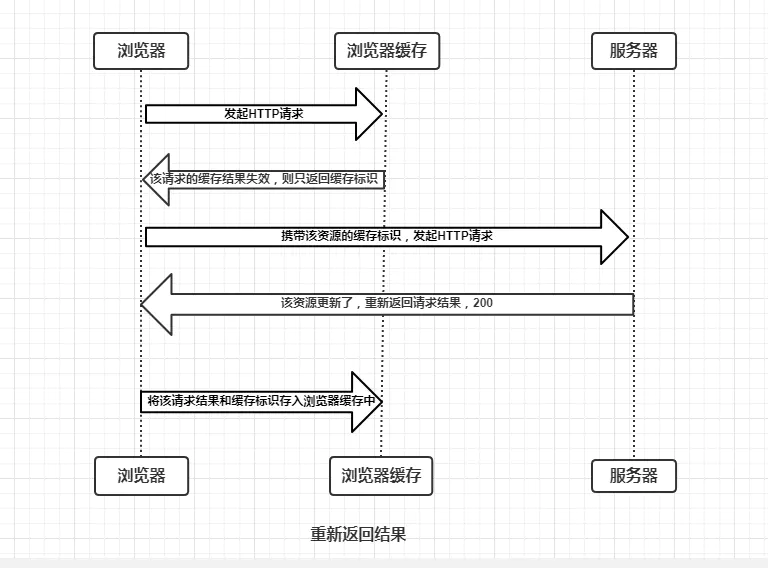

网络相关
跨域问题
1. Ajax 请求 同步？异步？
AJAX中根据async的值不同分为同步（async = false）和异步（async = true）两种执行方式；在W3C的教程中推荐使用异步执行。
默认情况下async是true，也就是异步。
同步请求：
发出请求后，需要等待请求完成后才能进行执行下一步操作。也就是说，页面会处于一个假死状态。
异步请求：
发出请求后，其他代码继续执行，Ajax请求不影响页面的加载和用户的操作。不影响用户体验。
ajax请求过程，简单实现一个Ajax请求
创建XMLHttpRequest对象后，并设置onreadystatechange的回调函数。在回调函数中，通常我们只需通过readyState === 4判断请求是否完成，如果已完成，再根据status === 200判断是否是一个成功的响应。
初始化请求。xhr.open(method, url, async)
注意，千万不要把第三个参数指定为false，否则浏览器将停止响应，直到AJAX请求完成。如果这个请求耗时10秒，那么10秒内你会发现浏览器处于“假死”状态。
发送请求。xhr.send()。GET请求不需要参数，POST请求需要把body部分以字符串或者FormData对象传进去。
function success(text) {
var textarea = document.getElementById('test-response-text');
textarea.value = text;
}
function fail(code) {
var textarea = document.getElementById('test-response-text');
textarea.value = 'Error code: ' + code;
}
var request = new XMLHttpRequest(); // 新建XMLHttpRequest对象
request.onreadystatechange = function () { // 状态发生变化时，函数被回调
if (request.readyState === 4) { // 成功完成
// 判断响应结果:
if (request.status === 200) {
// 成功，通过responseText拿到响应的文本:
return success(request.responseText);
} else {
// 失败，根据响应码判断失败原因:
return fail(request.status);
}
} else {
// HTTP请求还在继续...
}
}
// 发送请求:
request.open('GET', '/api/categories');
request.send();
ajax和jsonp哪个可以跨域，原理是什么？
ajax默认无法跨域，xhr2新增的CORS让ajax也可以跨域，需要输出http头(Access-Control-Allow-Origin)。jsonp可以跨域， 原理是script元素的src可以跨域。
2. 浏览器跨域问题的解决方案？
默认情况下，浏览器遵循同源策略，JavaScript在发送AJAX请求时，URL的域名必须和当前页面完全一致。
完全一致的意思是，域名要相同（www.example.com和example.com不同），协议要相同（http和https不同），端口号要相同（默认是:80端口，它和:8080就不同）。有的浏览器宽松一点，允许端口不同，大多数浏览器都会严格遵守这个限制。
跨域的方式：
通过Flash插件发送HTTP请求
配置代理服务器，如Nginx
JSONP跨域
只能用GET请求，并且要求返回JavaScript。JSONP通常以函数调用的形式返回。
跨域资源共享CORS
如果浏览器支持HTML5，那么就可以一劳永逸地使用新的跨域策略：CORS了。
CORS全称Cross-Origin Resource Sharing，是HTML5规范定义的如何跨域访问资源。
Origin表示本域，也就是浏览器当前页面的域。当JavaScript向外域（如sina.com）发起请求后，浏览器收到响应后，首先检查Access-Control-Allow-Origin是否包含本域，如果是，则此次跨域请求成功，如果不是，则请求失败，JavaScript将无法获取到响应的任何数据。
对于PUT、DELETE以及其他类型如application/json的POST请求，在发送AJAX请求之前，浏览器会先发送一个OPTIONS请求（称为preflighted请求）到这个URL上，询问目标服务器是否接受；服务器必须响应并明确指出允许的Method；浏览器确认服务器响应的Access-Control-Allow-Methods头确实包含将要发送的AJAX请求的Method，才会继续发送AJAX，否则，抛出一个错误。
document.domain + iframe跨域
location.hash + iframe
window.name + iframe跨域
postMessage跨域
nodejs中间件代理跨域
WebSocket协议跨域
img beacon跨域，常用来上报打点
利用img标签的src属性发送请求，上报打点相关的数据。
前端常见跨域解决方案（全） - 个人文章- SegmentFault 思否
网络请求
1. tcp三次握手，四次挥手
所谓三次握手(Three-way Handshake)，是指建立一个 TCP 连接时，需要客户端和服务器总共发送3个包。
三次握手的目的是连接服务器指定端口，建立 TCP 连接，并同步连接双方的序列号和确认号，交换 TCP 窗口大小信息。在 socket 编程中，客户端执行 connect() 时。将触发三次握手。
第一次握手(SYN=1, seq=x):
客户端发送一个 TCP 的 SYN 标志位置1的包，指明客户端打算连接的服务器的端口，以及初始序号 X,保存在包头的序列号(Sequence Number)字段里。
发送完毕后，客户端进入
SYN_SEND状态。第二次握手(SYN=1, ACK=1, seq=y, ACKnum=x+1):
服务器发回确认包(ACK)应答。即 SYN 标志位和 ACK 标志位均为1。服务器端选择自己 ISN 序列号，放到 Seq 域里，同时将确认序号(Acknowledgement Number)设置为客户的 ISN 加1，即X+1。 发送完毕后，服务器端进入
SYN_RCVD状态。第三次握手(ACK=1，ACKnum=y+1)
客户端再次发送确认包(ACK)，SYN 标志位为0，ACK 标志位为1，并且把服务器发来 ACK 的序号字段+1，放在确定字段中发送给对方，并且在数据段放写ISN的+1
发送完毕后，客户端进入
ESTABLISHED状态，当服务器端接收到这个包时，也进入ESTABLISHED状态，TCP 握手结束。
TCP 的连接的拆除需要发送四个包，因此称为四次挥手(Four-way handshake)，也叫做改进的三次握手。客户端或服务器均可主动发起挥手动作，在 socket 编程中，任何一方执行 close() 操作即可产生挥手操作。
第一次挥手(FIN=1，seq=x)
假设客户端想要关闭连接，客户端发送一个 FIN 标志位置为1的包，表示自己已经没有数据可以发送了，但是仍然可以接受数据。
发送完毕后，客户端进入
FIN_WAIT_1状态。第二次挥手(ACK=1，ACKnum=x+1)
服务器端确认客户端的 FIN 包，发送一个确认包，表明自己接受到了客户端关闭连接的请求，但还没有准备好关闭连接。
发送完毕后，服务器端进入
CLOSE_WAIT状态，客户端接收到这个确认包之后，进入FIN_WAIT_2状态，等待服务器端关闭连接。第三次挥手(FIN=1，seq=y)
服务器端准备好关闭连接时，向客户端发送结束连接请求，FIN 置为1。
发送完毕后，服务器端进入
LAST_ACK状态，等待来自客户端的最后一个ACK。第四次挥手(ACK=1，ACKnum=y+1)
客户端接收到来自服务器端的关闭请求，发送一个确认包，并进入
TIME_WAIT状态，等待可能出现的要求重传的 ACK 包。服务器端接收到这个确认包之后，关闭连接，进入
CLOSED状态。客户端等待了某个固定时间（两个最大段生命周期，2MSL，2 Maximum Segment Lifetime）之后，没有收到服务器端的 ACK ，认为服务器端已经正常关闭连接，于是自己也关闭连接，进入
CLOSED状态。
2. 详述输入url到页面渲染完成
域名解析-TCP分包-IP寻路-握手-滑动窗口传输-持久化连接-挥手-解析-构建dom树与cssom-构建渲染树-回流-重绘-渲染
- 域名（DNS）解析
- TCP 连接
- 发送HTTP请求
- 服务端处理请求并返回HTTP报文
- 浏览器解析渲染页面
- 连接结束
3. 浏览器如何缓存？
HTTP缓存机制
浏览器与服务器通信的方式为应答模式，即是：浏览器发起HTTP请求 – 服务器响应该请求。那么浏览器第一次向服务器发起该请求后拿到请求结果，会根据响应报文中HTTP头的缓存标识，决定是否缓存结果，是则将请求结果和缓存标识存入浏览器缓存中。

- 浏览器每次发起请求，都会先在浏览器缓存中查找该请求的结果以及缓存标识
- 浏览器每次拿到返回的请求结果都会将该结果和缓存标识存入浏览器缓存中
根据是否需要向服务器重新发起HTTP请求将缓存过程分为两个部分，分别是强制缓存和协商缓存。
强制缓存
强制缓存就是向浏览器缓存查找该请求结果，并根据该结果的缓存规则来决定是否使用该缓存结果的过程，强制缓存的情况主要有三种(暂不分析协商缓存过程)，如下：
不存在该缓存结果和缓存标识，强制缓存失效，则直接向服务器发起请求
存在该缓存结果和缓存标识，但该结果已失效，强制缓存失效，则使用协商缓存

存在该缓存结果和缓存标识，且该结果尚未失效，强制缓存生效，直接返回该结果
那么强制缓存的缓存规则是什么？
当浏览器向服务器发起请求时，服务器会将缓存规则放入HTTP响应报文的HTTP头中和请求结果一起返回给浏览器，控制强制缓存的字段分别是Expires和Cache-Control，其中Cache-Control优先级比Expires高。
协商缓存
协商缓存就是强制缓存失效后，浏览器携带缓存标识向服务器发起请求，由服务器根据缓存标识决定是否使用缓存的过程，主要有以下两种情况：
协商缓存生效，返回304

协商缓存失效，返回200和请求结果

协商缓存的标识也是在响应报文的HTTP头中和请求结果一起返回给浏览器的，控制协商缓存的字段分别有：Last-Modified / If-Modified-Since和Etag / If-None-Match，其中Etag / If-None-Match的优先级比Last-Modified / If-Modified-Since高。
总结
强制缓存优先于协商缓存进行，若强制缓存(Expires和Cache-Control)生效则直接使用缓存，若不生效则进行协商缓存(Last-Modified / If-Modified-Since和Etag / If-None-Match)，协商缓存由服务器决定是否使用缓存，若协商缓存失效，那么代表该请求的缓存失效，重新获取请求结果，再存入浏览器缓存中；生效则返回304，继续使用缓存。
4. 为什么cookie的容量比localStorage小？
因为cookie会附带在http请求的header里，如果容量大会有性能问题。
4. 应用缓存原理？
- app cache
- CacheStorage
- Web Worker
- Service Worker
描述application cache更新的过程。
第一次访问缓存manifest文件里列的文件，之后访问先加载缓存，在后台加载manifest文件按字节对比看是否有变化，如果没变化则说明缓存未失效，否则在后台按列表更新缓存，在下一次刷新页面的时候使用新的资源。
浏览器缓存、CacheStorage、Web Worker 与Service Worker ...